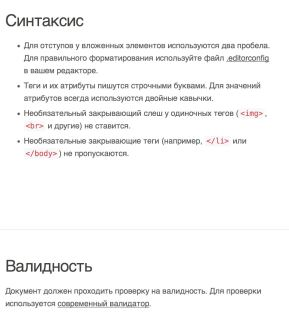
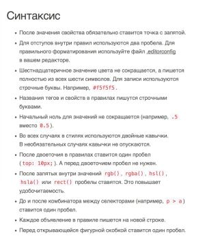
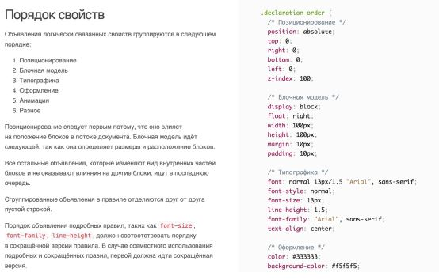
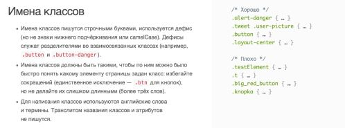
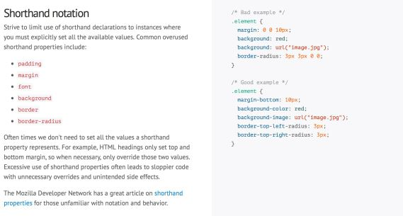
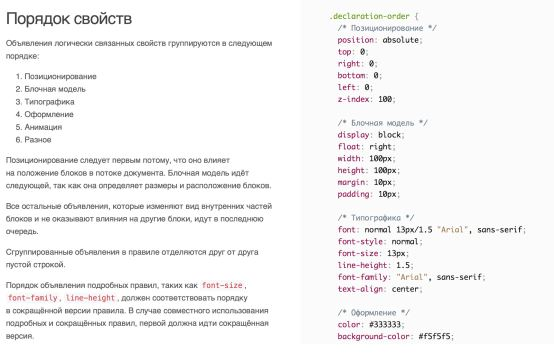
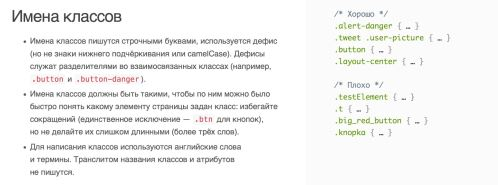
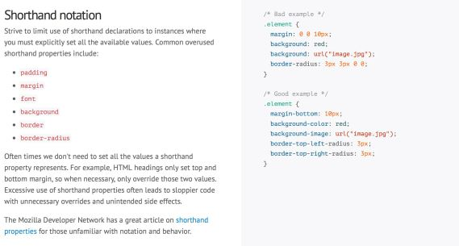
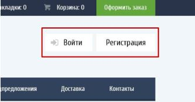

Стандарты - codeguide
При верстке следую стандартам синтаксиса, наиболее прогрессивным с т.з. сообщества верстальщиков:
Синтаксис HTML

Оформление CSS

Типовые имена классов:
https://github.com/yoksel/common-words
 Порядок CSS-свойств в правилах


MDO: нет сокращённой записи свойств!

Порядок CSS-свойств в правилах


MDO: нет сокращённой записи свойств!

Хороший верстальщик должен предусмотреть в коде даже то, что дизайнер поленился или забыл нарисовать:
● состояния элементов при взаимодействии
(наведение, тап, фокус и так далее);
● состояния элементов, зависящие от бизнес-
логики сайта (авторизация, добавление товара в корзину и так далее).
Детали бизнес-логики
Что будет, когда пользователь залогинится?

Все состояния пунктов меню свёрстаны? Как будет выглядеть активный пункт меню?
Как добавить товар в корзину понятно, а как потом убрать?
Другие кодегайды:
Кодгайд от HTML Academy - мой любимый!
http://html-academy.ru/codeguide/
Кодгайд от MDO - посматриваю, редко
http://mdo.github.io/code-guide/
Кодгайд от GOOGLE - для изучения
https://google.github.io/styleguide/htmlcssguide.xml
Idiomatic CSS
http://github.com/necolas/idiomatic-css/